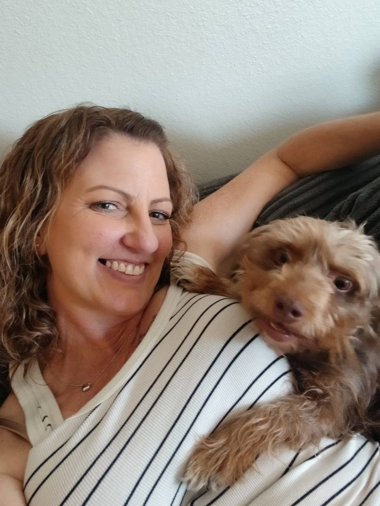

I took a coding class with Persevere while I was in prison, and this is the one-year update I wrote to the team.
Hi Persevere team!
Saturday marked one year since I came home from prison. I’ve been thinking about how much has changed in a year, and I wanted to share what I’ve been up to and thank you for all the ways you’ve encouraged me since I came home.
I’m still working as a Project Manager Assistant with RBD Construction in Arkansas. One of the coolest parts of my job has been using AI to help me build software for things we deal with on the job every day. The material tracker is the one I’m most excited about because everyone on our team uses it now. It gives us one place to see what’s been delivered and what we’re still looking for. I would have never guessed back in coding class that I’d be building software for a steel erection crew, but here we are!
Outside of work, my sister and I are relaunching In the Clouds Technology, where we build websites and software for small businesses. One of the software tools I’m working on is Cloud Scout, which helps small business owners figure out what technology makes sense for them and their budget. Let me know what you think of my website!!!
Giving back is a top priority. So in all my free time (haha), I'm also building Cell to Sunrise, a resource database and planning app for women coming home from prison, starting in Florida. I’ve been helping women look for housing and jobs and get things they need for release, like clothes, hygiene supplies, and bus passes. So far I have supplied 5 women with EOS outfits, 1 with interview clothes, 2 with hygiene, and 3 with transportation but probably the most exciting has been reconnecting families with each other prior to release and researching housing. A year ago I was the one trying to figure out where to start, and it means a lot to be able to help someone else with that now.
I’ve also started talking to my son, so now I’m in touch with both of my oldest kids. That’s one of the things I’m most grateful for this year.

God is still my number one priority. I am still in AA with a sponsee on her 8th step right now!
I’d love to give back to Persevere, too. If there’s ever a chance to speak to a class, help with a career readiness session, or mentor someone getting ready to come home, I’d love to be involved. I’d be happy to share what that first year looked like for me or show the class how I’m using what I learned at Persevere on a construction site.
Thank you for believing in me and for continuing to check in after I came home. It meant a lot then, and it still does.
Amy Parks